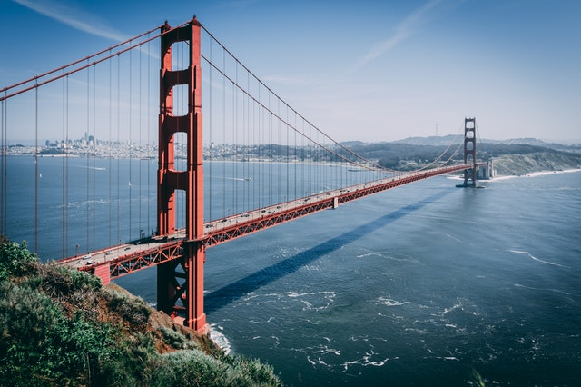

El puente mas lindo
Córdoba - 25 de Agosto del 2019
 El Golden Gate (en español, Puerta Dorada) es un puente colgante situado en California, Estados Unidos, que une la península de San Francisco por el norte con el sur del condado de Marin, cerca de Sausalito. Golden Gate es también el nombre del estrecho en el cual el puente está construido, y recibe su nombre del estrecho en Constantinopla, llamado también la Puerta Dorada, ya que comunicaba Europa con Asia.El Golden Gate es el puente más famoso de San Francisco a pesar de no ser el mayor en esta ciudad, ya que el Bay Bridge es la vía principal. En la década posterior a la Primera Guerra Mundial el tráfico rodado en la región de la bahía de San Francisco se multiplicó por siete, de modo que el sistema de ferris fue incapaz de absorber ese crecimiento. Catalogado como puente colgante, construido entre 1933 y 1937, con una longitud aproximada de 1280 metros, está suspendido de dos torres de 227 m de altura. Tiene una calzada de seis carriles (tres en cada dirección) y dispone de carriles protegidos accesibles para peatones y bicicletas.
El Blog de Nico
Un blog o bitácora es un sitio web que incluye, a modo de diario personal de su autor o autores, contenidos de su interés, que suelen estar actualizados con frecuencia y a menudo son comentados por los lectores.
Sirve como publicación en línea de historias con una periodicidad muy alta, que son presentadas en orden cronológico inverso, es decir, lo más reciente que se ha publicado es lo primero que aparece en la pantalla. Antes era frecuente que los blogs mostraran una lista de enlaces a otros blogs u otras páginas para ampliar información, citar fuentes o hacer notar que se continúa con un tema que empezó otro blog.
La estatua de la libertad
Córdoba - 12 de Agosto del 2019
 La libertad iluminando el mundo, conocida como la Estatua de la Libertad, es uno de los monumentos más famosos de Nueva York, de los Estados Unidos y de todo el mundo. Se encuentra en la isla de la Libertad al sur de la isla de Manhattan, junto a la desembocadura del río Hudson y cerca de la isla Ellis. La Estatua de la Libertad fue un regalo del gobierno francés al gobierno estadounidense en 1886 para conmemorar el centenario de la Declaración de Independencia de los Estados Unidos y como un signo de amistad entre las dos naciones.
La libertad iluminando el mundo, conocida como la Estatua de la Libertad, es uno de los monumentos más famosos de Nueva York, de los Estados Unidos y de todo el mundo. Se encuentra en la isla de la Libertad al sur de la isla de Manhattan, junto a la desembocadura del río Hudson y cerca de la isla Ellis. La Estatua de la Libertad fue un regalo del gobierno francés al gobierno estadounidense en 1886 para conmemorar el centenario de la Declaración de Independencia de los Estados Unidos y como un signo de amistad entre las dos naciones.La Estatua de la Libertad, además de ser un monumento importante en la ciudad de Nueva York, se convirtió en un símbolo en Estados Unidos y representa, en un plano más general, la libertad y emancipación con respecto a la opresión. Desde su inauguración en 1886, la estatua fue la primera visión que tenían los inmigrantes europeos al llegar a Estados Unidos tras su travesía por el océano Atlántico. En términos arquitectónicos, la estatua recuerda al famoso Coloso de Rodas, una de las siete maravillas del mundo antiguo.